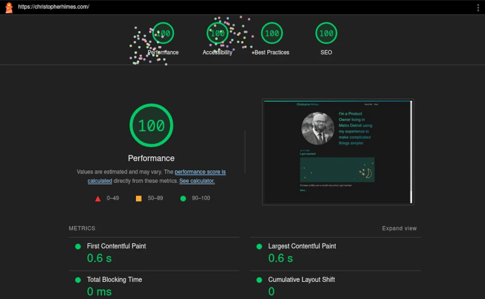
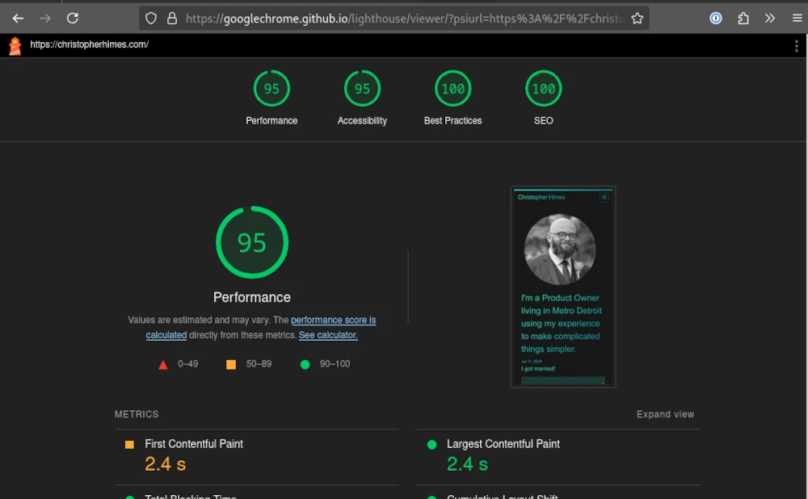

This site is not big, but it is faster, and more accessible.
As the briefest of lead ins to this project I wanted to learn about modern approaches to speed and accessibility. I’ve spent some time on Mastodon and follow a number of people that post about these topics regularly.
I want this site to function as fast as it can and be accessible to folks who may not be interacting with it the same way I am. With that as a goal I downloaded the Lighthouse extension to analyze this site.
Starting off the site looked good for SEO and best practices but had some room for improvement with both performance and accessibility. Thankfully the score for each section comes with specific problems and ways to improve.
For performance images were the largest issue. They have been resized and converted to webp (from jpg). This brought the score up to 100 on desktop but the mobile version only ever got up to 95%. There remains a bit of css that is load blocking and I have not been able to find a way to resolve it without a significant rewrite.
As far as accessibility goes the usual suspects were the culprits. Images lacked alt tags and contrast was too low with some color choices for links. This is relatively easy to resolve. I updated my color choices in CSS to increase contrast. Here too mobile is at 95% and I cannot figure out why. Out of frustration I set the links to white and the background to black and Lighthouse still reported a contrast issue. Anyway I’ve been updating alt tags but I will probably go back and make them a little better when I have time.
Here are the final scores!
Desktop

Mobile

I am happy to have these scores as high as they are but I do not think this is over just yet. Having read a bunch of ways to improve things, now I want to go further. 95% is pretty good on mobile for performance and accessibility but is there any reason why these cannot be 100% as well.
The rewrite I mentioned earlier is incoming. This site is simply more complicated than it needs to be and I really want to experiment with critical CSS being inlined to prevent load blocking.
There is no reason that this site should be a recolor of an existing theme. Especially when that theme is introducing so much unnecessary overhead. Anyway, more on that to come.
The image above is from Photo by Nathan Jennings on Unsplash.
Comments
Comment on this blog post by publicly replying to this Mastodon post using a Mastodon or other ActivityPub/Fediverse account. Known non-private replies are displayed below.
No known comments, yet. Reply to this Mastodon post to add your own!